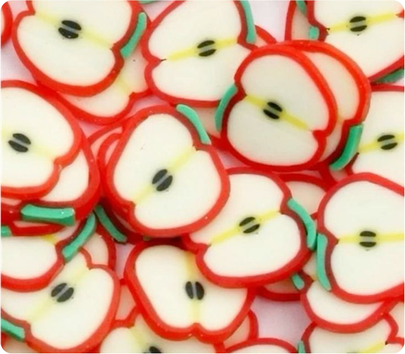

Fan Facts about apples
Apples belong to a unique family called Rosaceae plants, which consist of almost three thousand species of plants. These plants are characterized by the beauty of their flowers, including the common rose flowers. Other plants in this category include pears, strawberries, raspberries, plums, and cherries.

The apples
And other members of the family are warm-weather plants. The apples majorly bloom during spring, showing buds, and eventually, apples come out after pollination. The apples and the other trees in this category are famous for their beautiful flowers.